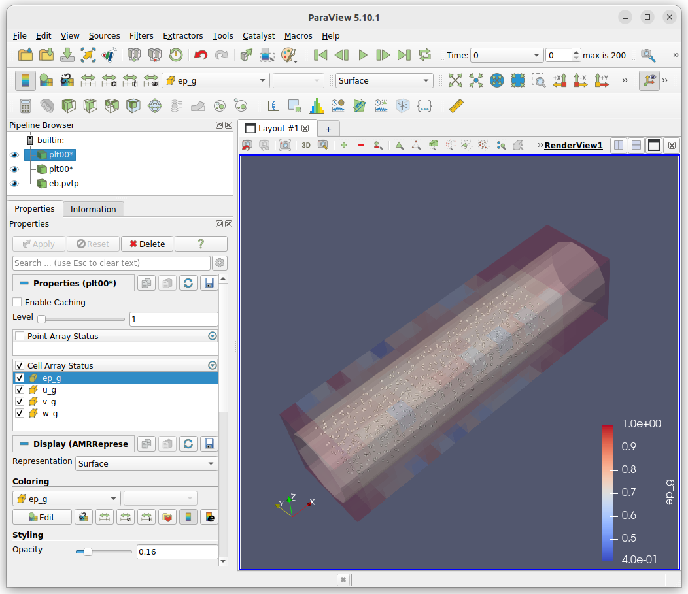

Using Paraview
Paraview is an opensource visualization tool developed by Kitware. It provides an intuit and feature rich tool for visualizing simulation data. Kitware provides pre-built binaries that can be downloaded here. Paraview 5.10.1 is the current recommended version.
Visualize the embedded boundary
The solver will save the embedded boundary if mfix.write_eb_surface = true
is set in the inputs file as parallel VTP file named eb.pvtp.
To open the eb.pvtp file, press the open button, browse to the simulation
directory, select the eb.pvtp file, and press OK. The eb.pvtp will
be displayed in the Pipeline Browser. Make sure the eb.pvtp is selected
in Pipeline Browser and press Apply on the properties tab. The embedded
boundary will now be visible in the 3D viewer. The color and opacity of the
embedded boundary can be changed on the properties tab.
Visualize the particles
The solver will write plot files if one of the write frequency options is set
(mfix.plot_int, mfix.plot_per_exact, or mfix.plot_per_approx) in
directories that are prefixed with the prefix specified in the inputs file
(mfix.plot_file = 'plt'). To visualize these particles in Paraview, press
the open button. In the file dialog, browse to the simulation directory and
select the directory group corresponding to the specified prefix. In this
example, the director group is displayed as plt.... If only one plot
directory has been written, select the plt##### directory. Press OK.
A dialog will popup asking what reader to use. Select the
AMReX/BoxLib Particles Reader and press OK.
Press Apply on the properties tab to read the files. To actually see the
particles, change the Representation from the default Surface to
Point Gaussian. The particles should now be visible in the 3D view.
On the properties tab, the radius of the particles can be changed by moving the
slider or editing the value in the Gaussian Radius field. The particles can
be colored by different variables by selecting the variable in the drop down.
Additionally, if a group of plot files was opened, the simulation can be
“played” by pressing the play button.
Visualize the cells
Following the same method to visualize the particles, the cells can be
visualized. The major difference is when the dialog asking what read to use
is displayed, select the AMReX/BoxLib Grid Reader and press OK. On the
properties tab, select which variables to read (make sure to select ep_g,
we will use this later) and select apply. Under the Coloring section select
ep_g to color the cells by this value.
You can open the embedded boundary, particle, and fluid data simultaneously, and change the opacities of the embedded boundary and fluid data to visualize all the data simultaneously.
